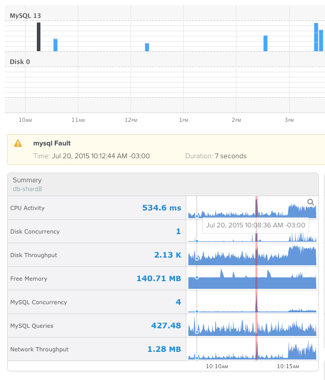
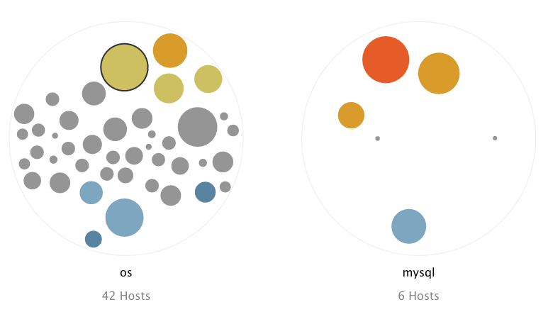
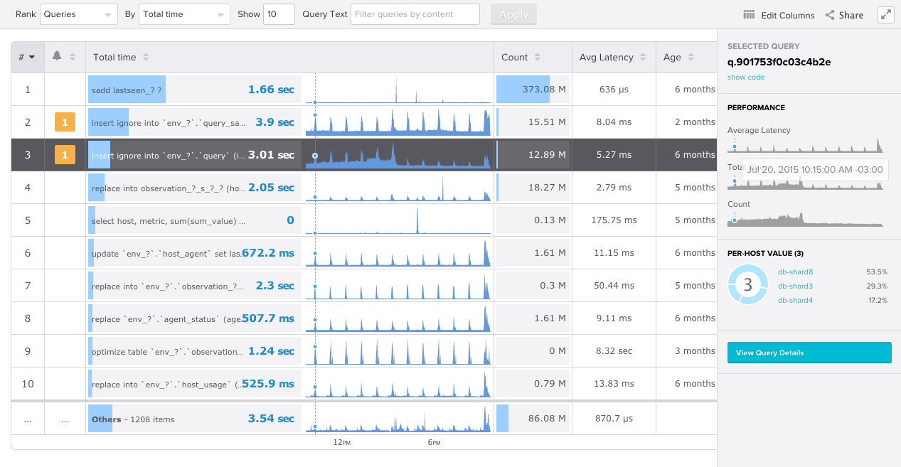

class: inverse, center, middle # Intro a D3 para los más chambones Miguel Trias `<miguel@vividcortex.com>` --- class: inverse, center, middle <br> <p>https://vividcortex.com/</p> <p>SAAS for Database Performance Monitoring</p> --- class: inverse, center, middle # Faults  --- # Throughput  --- # Top Queries  --- class: inverse, middle # Agenda 1. SVG 1. d3 ??? - Preguntas bienvenidas - Nivel Basico (HTML, CSS, Javascript) - Ejercicios en el medio --- class: inverse, center, middle # SVG --- class: center, middle # SVG Scalable Vector Graphics <blockquote> Is an <strong>XML-based</strong> vector image format for <strong>two-dimensional graphics</strong> with support for <strong>interactivity and animation</strong>. The SVG specification is an open standard developed by the World Wide Web Consortium (W3C) since 1999. </blockquote> <footer> https://en.wikipedia.org/wiki/Scalable_Vector_Graphics </footer> --- # Se lleva bien con HTML - Se puede embeber en HTML - Misma sintaxis. (`<nodos con="atributos">`) - API DOM - eventos - CSS - No requiere plugins ??? Maneras de embeber: inline <svg>, <img>, <embed> --- # `<rect>` ```html <svg xmlns="http://www.w3.org/2000/svg" version="1.1" width="100%" height="200"> <rect x="25" y="25" width="100" height="100" fill="indigo" stroke="gray" stroke-width="8" /> </svg> ``` <svg> <rect x="25" y="25" width="100" height="100" fill="indigo" stroke="gray" stroke-width="8" /> </svg> <footer> https://developer.mozilla.org/en/docs/Web/SVG/Namespaces_Crash_Course </footer> ??? - contenido esta dentro de HTML - xmlns & version (ver pie) - version 2.0 en working draft - `<svg>` es asumido en las proximas diapos --- class: middle, center # Buenas Practicas <p>Atributos = Geometria</p> <p>CSS = Estilos</p> --- # `<rect>` ```svg <rect x="25" y="25" width="100" height="100" /> ``` ```css rect { fill: indigo; stroke-width: 8; stroke: gray; } ``` <style> rect#svg-r2 { fill: indigo; stroke-width: 8; stroke: gray; } </style> <svg> <rect id="svg-r2" x="25" y="25" width="100" height="100" /> </svg> --- # Texto ```svg <text x="20" y="60" class="stroke-php js" style="font-size: 70; stroke-width: 2" >PHP Day 2015</text> ``` <svg heigth="200" width="200"> <text x="20" y="60" class="stroke-php js" style="font-size:70; stroke-width: 2" >PHP Day 2015</text> </svg> --- #`<circle><line><polyline>` ```html <circle cx="125" cy="125" r="67" fill="orange" /> <line x1="50" y1="50" x2="150" y2="150" stroke="blue" stroke-width="4" /> <polyline points="4,100 4,150 150,150 150,50" stroke="red" fill="none" /> ``` <svg xmlns="http://www.w3.org/2000/svg" version="1.1" height="200"> <circle cx="75" cy="75" r="67" fill="orange" /> <polyline points="4,100 4,150 150,150 150,50" style="stroke:red" fill="none" /> <line x1="50" y1="50" x2="150" y2="150" style="stroke:blue" /> </svg> --- # Sistema de Coordenadas <svg height="880" style="position: absolute; left: 50px; top: 120px;"> <defs> <marker id="markerArrow" markerWidth="9" markerHeight="9" refX="2" refY="4.5" orient="auto" markerUnits="strokeWidth"> <path d="M2,2 L2,7 L7,4.5 L2,2" stroke-width="0" stroke="none" /> </marker> </defs> <line x1="20" y1="20" x2="20" y2="400" style="marker-end: url(#markerArrow)" /> <line x1="20" y1="20" x2="600" y2="20" style="marker-end: url(#markerArrow)" /> </svg> ```html <svg height="480"> <defs> <marker id="markerArrow" markerWidth="9" markerHeight="9" markerUnits="strokeWidth" refX="2" refY="4.5" orient="auto" > <path d="M2,2 L2,7 L7,4.5 L2,2" /> </marker> </defs> <line x1="20" y1="20" x2="600" y2="20" class="flecha" /> <line x1="20" y1="20" x2="20" y2="350" class="flecha" /> </svg> ``` ```css svg .flecha { marker-end: url(#markerArrow); } ``` --- # No hay z-index ```svg <circle cx="100" cy="150" r="95" fill="orange" /> <circle cx="200" cy="150" r="95" fill="indigo" /> <circle cx="600" cy="150" r="95" fill="indigo" /> <circle cx="500" cy="150" r="95" fill="orange" /> ``` <svg height="300" width="250"> <circle cx="100" cy="150" r="95" fill="orange" /> <circle cx="200" cy="150" r="95" fill="indigo" /> <circle cx="600" cy="150" r="95" fill="indigo" /> <circle cx="500" cy="150" r="95" fill="orange" /> </svg> --- # Ejercicio <svg height="470" width="600"> <circle cx="210" cy="210" r="210" class="no-stroke js" /> <circle cx="210" cy="210" r="50" class="no-stroke php" /> <circle cx="210" cy="210" r="10" class="no-stroke ruby" /> <rect x="440" y="155" width="25" height="25" class="no-stroke js" /> <rect x="440" y="185" width="25" height="25" class="no-stroke php" /> <rect x="440" y="215" width="25" height="25" class="no-stroke ruby" /> <text x="470" y="175">Javascript</text> <text x="470" y="205">Php</text> <text x="470" y="235">Ruby</text> </svg> --- # Ejercicio ```svg <circle cx="210" cy="210" r="210" class="no-stroke js" /> <circle cx="210" cy="210" r="50" class="no-stroke php" /> <circle cx="210" cy="210" r="10" class="no-stroke ruby" /> <rect x="440" y="155" width="25" height="25" class="no-stroke js" /> <rect x="440" y="185" width="25" height="25" class="no-stroke php" /> <rect x="440" y="215" width="25" height="25" class="no-stroke ruby" /> <text x="470" y="175">Javascript</text> <text x="470" y="205">Php</text> <text x="470" y="235">Ruby</text> ``` <svg height="600" width="600"> <circle cx="210" cy="210" r="210" class="no-stroke js" /> <circle cx="210" cy="210" r="50" class="no-stroke php" /> <circle cx="210" cy="210" r="10" class="no-stroke ruby" /> <rect x="440" y="155" width="25" height="25" class="no-stroke js" /> <rect x="440" y="185" width="25" height="25" class="no-stroke php" /> <rect x="440" y="215" width="25" height="25" class="no-stroke ruby" /> <text x="470" y="175">Javascript</text> <text x="470" y="205">Php</text> <text x="470" y="235">Ruby</text> </svg> ??? PROBLEMAS - Clases CSS repetidas - Posicionamiento repetido - Posicionamiento complicado - Mantenimiento complicado - Geometria repetida --- # `<defs>`, `<use>` ```svg <defs> <rect id="square" x="40" width="25" height="25" class="no-stroke" /> </defs> <use xlink:href="#square" y="55" class="js" /> <use xlink:href="#square" y="85" class="php" /> <use xlink:href="#square" y="115" class="ruby" /> <text x="70" y="75">Javascript</text> <text x="70" y="105">Php</text> <text x="70" y="135">Ruby</text> ``` <svg height="200" width="600"> <defs> <rect id="square" x="40" width="25" height="25" class="no-stroke" /> </defs> <use xlink:href="#square" y="55" class="js" /> <use xlink:href="#square" y="85" class="php" /> <use xlink:href="#square" y="115" class="ruby" /> <text x="70" y="75">Javascript</text> <text x="70" y="105">Php</text> <text x="70" y="135">Ruby</text> </svg> ??? - muestro solo lo que cambio - no se ahorra mucho codigo porque la estructura es chica y simple (luego viene <g>) - igualmente se ahorra performance --- # Transformaciones ```svg <defs> <rect id="rect" y="50" height="60" width="60" class="php" /> </defs> <use x="0" xlink:href="#rect" /> <use x="100" xlink:href="#rect" transform="rotate(30, 130, 80)" /> <use x="200" xlink:href="#rect" transform="scale(2)" /> <use x="300" xlink:href="#rect" transform="skewX(10)" /> <use x="400" xlink:href="#rect" transform="translate(0,-15)" /> ``` <svg height="250"> <defs> <rect id="rect" y="50" height="60" width="60" class="php" /> </defs> <use x="0" xlink:href="#rect" /> <use x="100" xlink:href="#rect" transform="rotate(30, 130, 80)" /> <use x="200" xlink:href="#rect" transform="scale(2)" /> <use x="300" xlink:href="#rect" transform="skewX(10)" /> <use x="400" xlink:href="#rect" transform="translate(0,-15)" /> </svg> --- # `<G>` - Agrupar objetos - Transformaciones aplicadas, son heredadas por los hijos - Conveniente para aplicar estilos - Reciclar composiciones mediante `<use>` --- # Un poco mejor ```svg <g transform="translate(210,210)" class="no-stroke"> <circle r="210" class="js" /> <circle r="50" class="php" /> <circle r="10" class="ruby" /> </g> <g transform="translate(440)"> <g class="no-stroke"> <rect y="155" width="25" height="25" class="js" /> <rect y="185" width="25" height="25" class="php" /> <rect y="215" width="25" height="25" class="ruby" /> </g> <g transform="translate(40)"> <text y="175">Javascript</text> <text y="205">Php</text> <text y="235">Ruby</text> </g> </g> ``` <!--svg height="450" width="400"></svg--> ??? - estructura conveniente con <g> - segundo "transform" es relativo al primero - class puestos al <g> - cx y cy omitidos xq default=0 --- # `<path>` ```html <path d=" M10,100 L10,10 A10,10 0 0,1 10,60 M50,100 V10 M80,100 V10 M50,60 H80 M100,100 v-90 A10,10 0 0,1 100,60 "> ``` <svg xmlns="http://www.w3.org/2000/svg" version="1.1" height="120"> <path d="M10,100 L10,10 A10,10 0 0,1 10,60 M50,100 V10 M80,100 V10 M50,60 H80 M100,100 v-90 A10,10 0 0,1 100,60 " stroke-width="10" class="no-fill stroke-php" > </svg> ??? - El elemento mas versatil y avanzado, pero tambien el mas dificil de usar - M = move - L = line - A = arc - H = horizontal - V = Vertical - minuscula = coordenadas relativas - mayuscula = coordenadas absolutas --- # `<path>` ```svg <path d="M80,80 L290,290" /> <path d="M80,80 A1,1 0 1,1 290,290" /> <path d="M80,80 Q290,0 290,290" /> ``` <svg xmlns="http://www.w3.org/2000/svg" version="1.1" height="300" width="300"> <g class="no-fill"> <path d="M80,80 L290,290" class="stroke-php" /> <path d="M80,80 A1,1 0 1,1 290,290" class="stroke-js" /> <path d="M80,80 Q290,0 290,290" class="stroke-ruby" /> </g> </svg> --- class: inverse, center, middle --- class: inverse, center, middle # Más SVG ``` http://tutorials.jenkov.com/svg/index.html https://svgontheweb.com/ ``` --- class: inverse, center, middle # D3 --- class: center, middle # D3 Data Driven Documents <blockquote> D3.js is a JavaScript library for manipulating documents based on data. </blockquote> <footer> http://d3js.org/ </footer> ??? Data-driven: linkear datos a nodos del DOM y luego aplicar transformaciones basadas en esos datos --- # D3 - las librerias "standard" de graficos no siempre tienen la que necesitamos - quizas queremos inventar una - o queremos que interactuen entre si - afinar detalladamente el comportamiento o diseño de los elementos - procesar los datos en el mismo lugar - ejecutar algoritmos caros (layouts, scaling, zooming, paning, brushing, animaciones, deteccion de colisiones, mapas, geoJSON, simulaciones fisicas (gravedad, cargas, etc) ) <footer> http://d3js.org/#introduction </footer> ??? - Por qué lo necesitamos? - control vs facilidad de implementacion --- # Por si aun no te convence - [Voronoi Tesselations](http://bl.ocks.org/mbostock/4060366) - [Fish Eye](http://bost.ocks.org/mike/fisheye/) - [Mobile Patents](http://bl.ocks.org/mbostock/1153292) - [Zoomable Treemaps](http://bost.ocks.org/mike/treemap/) - [Faux 3D Arcs](http://bl.ocks.org/dwtkns/4973620) - [Collision Detection](http://bl.ocks.org/mbostock/3231298) - [Scatterplot Matrix](http://bl.ocks.org/mbostock/4063663) - [Epicyclic Gearing](http://bl.ocks.org/mbostock/1353700) - [Obama Budget](http://www.nytimes.com/interactive/2012/02/13/us/politics/2013-budget-proposal-graphic.html?_r=0) - [Taxes](http://www.nytimes.com/interactive/2013/05/25/sunday-review/corporate-taxes.html) - [Stop and Frisk](http://www.nytimes.com/interactive/2014/09/19/nyregion/stop-and-frisk-map.html) --- viz: vizSelections1 # Selections > `select` ```html <svg> <rect id="rect" x="100" y="50" height="60" width="60" /> </svg> ``` ```javascript d3.select('#rect').style("fill", "green"); // equivalente a document.getElementById('rect').style.setProperty("fill", "green"); ``` <div id="vizSelections1" class="viz-container"> <svg> <rect id="d3_selections_rect" x="100" y="50" height="60" width="60" /> </svg> </div> --- viz: vizSelections2 # Selections > `selectAll` ```html <svg> <rect x="100" y="50" height="60" width="60" /> <rect x="200" y="50" height="60" width="60" /> </svg> ``` ```javascript d3.selectAll('rect').style("fill", "green"); // equivalente a document.getElementsByTagName('rect').forEach(function(rect) { rect.style.setProperty("fill", "green"); }); ``` <div id="vizSelections2" class="viz-container"> <svg> <rect x="100" y="50" height="60" width="60" /> <rect x="200" y="50" height="60" width="60" /> </svg> </div> ??? - evitamos loops --- viz: vizSelections3 # Selections > `selectAll` ```html <svg> <rect x="100" y="50" height="60" width="60" /> <rect x="200" y="50" height="60" width="60" /> </svg> ``` ```javascript d3.selectAll('rect') .attr("height", "150") .attr("width", "100") .style("fill", "gray") .style("stroke", "indigo"); ``` <div id="vizSelections3" onclick="viz(this)" class="viz-container"> <svg height="250"> <rect x="100" y="50" height="60" width="60" /> <rect x="250" y="50" height="60" width="60" /> </svg> </div> ??? - interfaz fluida ( method chaining ) - codigo conciso y declarativo - usamos la misma seleccion varias veces - hasta ahora es lo mismo q jQuery --- viz: vizSelections4 # Selections ```html <svg> <rect x="100" height="60" width="60" /> <rect x="200" height="60" width="60" /> </svg> ``` ```javascript d3.selectAll('rect') .attr("height", "150") .attr("width", function () { return 100; }) .style("fill", function (d, i) { return ["gray", "orange"][i]; }); ``` <div id="vizSelections4" onclick="viz(this)" class="viz-container"> <svg> <rect x="100" height="60" width="60" /> <rect x="250" height="60" width="60" /> </svg> </div> ??? - Callbacks to define properties - index in second position --- # Ejercicio ```svg <circle> <circle> <circle> ``` <div> <svg height="280"> <g transform="translate(210,140)" class="no-stroke"> <circle r="130" class="js" /> <circle r="50" class="php" /> <circle r="15" class="ruby" /> </g> <g transform="translate(440)"> <g class="no-stroke"> <rect y="100" width="25" height="25" class="js" /> <rect y="130" width="25" height="25" class="php" /> <rect y="160" width="25" height="25" class="ruby" /> </g> <g transform="translate(40)"> <text y="120">Javascript</text> <text y="150">Php</text> <text y="180">Ruby</text> </g> </g> </svg> </div> ??? - Markup del ejercicio anterior - incluir d3 en un <script> - TODO: facilitar un codepen!!! - borrar atributos de <circle> - asignar "r" y "fill" (o un "class") usando d3 - se puede usar un random, o un ordinal "i" --- viz: vizSelectionsPractice # Ejercicio ```javascript d3.selectAll('circle') .attr("r", function () { return Math.random() * 200; }) .attr("class", function (d, i) { return ['php', 'js', 'ruby'][i] + ' transparent'; }); ``` <div id="vizSelectionsPractice" class="viz-container"> <svg height="280"> <g transform="translate(210,140)" class="no-stroke"> <circle r="210" class="js transparent" /> <circle r="50" class="php transparent" /> <circle r="10" class="ruby transparent" /> </g> <g transform="translate(440)"> <g class="no-stroke"> <rect y="100" width="25" height="25" class="js" /> <rect y="130" width="25" height="25" class="php" /> <rect y="160" width="25" height="25" class="ruby" /> </g> <g transform="translate(40)"> <text y="120">Javascript</text> <text y="150">Php</text> <text y="180">Ruby</text> </g> </g> </svg> </div> ??? Notar: - transparent (para no enfrentarme al z-index) - estamos sobreescribiendo el "class" cada vez --- # Visualización > Es un mapeo de datos a gráficos 1. datum -> objeto 2. cantidades -> propiedades ??? Notar: tambien importa el cambio: i) data joins (comprende enter/update/exit) ii) formas, colores, dimensiones, posiciones, transiciones --- # Data Joins ```javascript var data = [200, 100, 15]; ``` ```javascript d3.selectAll('circle') .attr("r", function (d, i) { return data[i]; }); ``` ??? - mal hecho, solo para ilustrar el concepto - aun no sabemos que es el parametro "d" --- viz: vizDataJoin1 # Data Joins ```html <circle /><circle /><circle /> ``` ```javascript var data = [200, 100, 15]; ``` ```javascript d3.selectAll('circle') .data(data) .attr("r", function (d, i) { return d; }) ``` <div id="vizDataJoin1" class="viz-container"> <svg height="400"> <g transform="translate(210,210)" class="no-stroke"> <circle /> <circle /> <circle /> </g> </svg> </div> ??? - ahora si ta bien - callbacks reciben el datum y el indice - pero seguimos creando el markup a mano!! --- # Ejercicio ```javascript var data = [ {lang: 'js', popularity: 200}, {lang: 'php', popularity: 100}, {lang: 'ruby', popularity: 15}, ]; ``` ??? - estructura de datos mas completa - completar para usar las "class" usando un callback --- viz: vizDataJoin2 # Data Joins ```javascript var data = [ {lang: 'js', popularity: 200}, {lang: 'php', popularity: 100}, {lang: 'ruby', popularity: 15}, ]; ``` ```javascript d3.selectAll('circle') .data(data) .attr("r", function (d, i) { return d.popularity; }) .attr("class", function (d, i) { return d.lang; }); ``` <!--div id="vizDataJoin2" class="viz-container"> <svg height="400"> <g transform="translate(210,210)" class="no-stroke"></g> </svg> </div--> --- class: center # Enter-Update-Exit <img src="./mindblown.gif" /> --- viz: vizEUE1 # Enter-Update-Exit ```html <svg></svg> ``` ```javascript var data = [200, 100, 15]; ``` ```javascript d3.selectAll("circle") .data(data) .enter().append("circle") .attr("r", function (d) { return d; }); ``` <div id="vizEUE1" class="viz-container"> <svg height="400"> <g transform="translate(210,210)" class="no-stroke"></g> </svg> </div> ??? - ya no creamos los elementos - callbacks reciben el datum - append y selection no siempre tienen lo mismo - selectAll en elementos que sabemos que no existen. - no le decimos como crear circulos, sino que queremos - queremos un circulo por cada datum --- class: center # Enter-Update-Exit <svg height="400"> <g transform="translate(0,220)"> <g transform="translate(280)"> <circle r="150" class="php transparent" /> <text y="-180" dy=".35em" text-anchor="middle" style="font-weight: bold; font-variant: small-caps;">data</text> <text x="-50" dy=".35em" text-anchor="middle" style="font-variant: small-caps;">enter</text> </g> <g transform="translate(450)"> <circle r="150" class="js transparent" /> <text y="-180" dy=".35em" text-anchor="middle" style="font-weight: bold; font-variant: small-caps;">elements</text> <text x="50" dy=".35em" text-anchor="middle" style="font-variant: small-caps;">exit</text> </g> <text x="360" dy=".35em" text-anchor="middle" style="font-variant: small-caps;">update</text> </g> </svg> ??? - Los datum pueden entrar, cambiar o salir - resolvimos la entrada, faltan U y E --- viz: vizEUE2 # Enter-Update-Exit ```javascript var circles = d3.selectAll('circle').data(eue2Data); circles.enter().append("circle"); circles .attr("r", function (d, i) { return d.popularity; }) .attr("class", function (d, i) { return d.lang; }); circles.exit().remove(); ``` <div id="vizEUE2" class="viz-container"> <svg height="400"> <g transform="translate(210,210)" class="no-stroke"></g> </svg> </div> ??? - cada click ejecuta un cambio en los datos equivalente a EUE - data retorna la misma seleccion, pero enter/exit retornan otra - los cambios en "update" aplican a los nodos que recien entraron por el orden - este patron sirve para cualquier situacion - enter para viz estaticas - update/exit para ver datos realtime - tambien permite "explorar" los datos (brush, highlight) - permite hacer transiciones facilmente --- # Scales ```javascript .attr("r", function (d, i) { return d.popularity; }) ``` ??? - Hasta ahora mapeabamos directamente el dato al radio del circulo. - mal: - asumiamos popularidad <= tamanio del svg - no tiene sentido - asumiamos que siempre ibamos a usar un circulo - mal, porque area es πR2 --- # Scales <blockquote> Scales are functions that map from an input domain to an output range. </blockquote> <img src="d3scale.png" /> --- # Scales ```javascript var max = d3.max(data, function (d) { return d.popularity; }) var r = d3.scale.linear() .domain([0, max]) .range([0, width / 4]) ``` ```javascript .attr("r", function (d, i) { return r(d.popularity); }) ``` --- # Scales - Quantitative - Ordinal - Time ??? 1 - Dominios continuos (numeros) 2 - dominios discretos (nombres, categorias, colores) 3 - tiempo --- # Scales - Quantitative - Linear - Power - Log - Quantize - Quantile - Threshold - Ordinal - Time ??? 1 - Dominios continuos (numeros) 2 - dominios discretos (nombres, categorias) 3 - tiempo --- # Linear Scales - .rangeRound() - .interpolate() - .clamp() - .nice() ??? rangeRound -> redondear a enteros interpolate -> interpolacion personalizada clamp -> enable/disable extrapolation nice -> extiende el dominio a valores lindos - todas tienen metodos comunes más otros especiales --- viz: vizAxisDemo # Axis ```javascript svg.append("g"); var scale = d3.time.scale() .domain([ Date.now() - offset, Date.now() ]) .range([0, width]) .nice(); var axis = d3.svg.axis() .ticks(5) .scale(scale); svg.call(axis); ``` <div id="vizAxisDemo" class="viz-container"> <svg height="100"></svg> </div> --- # Transitions <blockquote> A transition is a special type of selection where the operators apply smoothly over time rather than instantaneously </blockquote> <footer> https://github.com/mbostock/d3/wiki/Transitions </footer> ??? - a partir de una seleccion, llamamos a .transition() para obtener otra - los operadores actuan lentamente a travez de interpoladores - se puede definir la duracion y el delay - reciben "d" e "i" --- viz: vizTrans1 # Transitions ```javascript d3.select('circle').transition() .ease('linear') .duration(8e3) .attr("r", 80) .attr("fill", "yellow") .attr("cx", width - r); ``` <div id="vizTrans1" class="viz-container"> <svg height="200"> <circle cx="20" cy="100" fill="indigo" r="20" class="no-stroke" ></circle> </svg> </div> --- # Transitions ```javascript var data = [{x: 0, y: 100}, {x: 10, y: 150}, ...]; var line = d3.svg.line() .x(function(d) { return d.x; }) .y(function(d) { return d.y; }) .interpolate("linear"); d3.select('path') .transition().ease('linear').duration(8e3) .attr("d", line(data)); ``` <div id="vizTrans2" class="viz-container"> <svg xmlns="http://www.w3.org/2000/svg" version="1.1" height="220"> <path d="" stroke-width="10" class="no-fill stroke-php" > </svg> </div> --- # Force Layout --- class: inverse, center, middle # ? --- class: inverse, center, middle # Gracias <footer> <ul> <li>D3: http://d3js.org/</li> <li>Diapositivas: https://github.com/mtrias/d3-intro</li> <li>Tutorial SVG: http://tutorials.jenkov.com/svg</li> <li>Otro: https://svgontheweb.com/</li> <li>Blog de Mike: http://bost.ocks.org/mike/</li> <li>Pruebas: http://bl.ocks.org/</li> <li>Tutoriales D3: https://github.com/mbostock/d3/wiki/Tutorials</li> <li>Data Joins: http://bost.ocks.org/mike/join/</li> <li>Object constancy: http://bost.ocks.org/mike/constancy/</li> <li>Enter/update/exit: http://bl.ocks.org/mbostock/3808218</li> </ul> </footer>